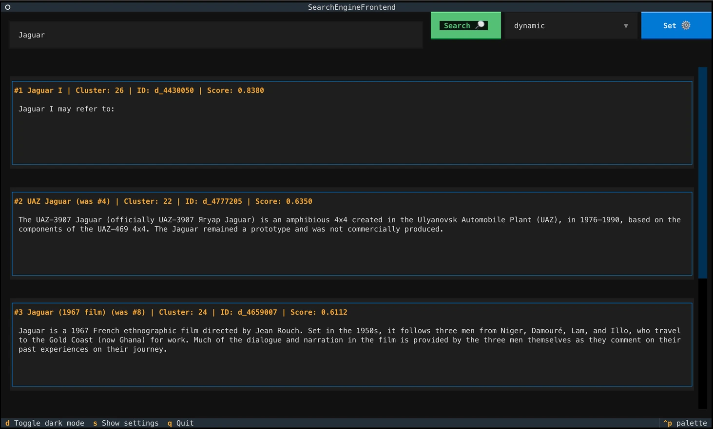

Emmanuel Diehl
Emmanuel's website. Mostly focused on programming, video games, business, sharing knowledge and the intersection of these things.
I am a computer science student and organizer of the Gamedev Dresden Meetup. I make games, read machine learning papers in a reading group and am active in the Saxon founder bubble as a recipient of the InnoStartBonus.
Elsewhere
Games
I am passionate about technology, art and business, with video games right at the intersection of those. Over the years I have made countless smaller titles for game jams and eventually released my first commercial title, Hand of Hexes, on Steam. Most of my games are made in Godot.
-
Hand of Hexes
A no-text deckbuilder and tower defense game where you control the enemies' paths by constructing deadly mazes using towers with crazy attack patterns. Sold 600 copies in its first five months.
-
Small vine, long line
Explore three brief settings as you help our hand-drawn little vine escape.
-
Snöfall
A mini narrative game about a lil guy having a crisis, made in four hours.
-
Fall of Fortune
Bet on your favourite horse and then sprout trees during the round to gain an unfair advantage. Made in 18 sleepless hours for the GameDevDD Jam #1.
-
Slam to the laughter
In this classic Doom-style shooter you play the DOMAIN_DEFENDATRON, tasked to bring smiles and laughter back into the realm of the public domain. Made in 48 hours for the Global Game Jam.
-
Captain Abgetrotz und seine Trödeljagd
Play a pirate hunting for treasure to sell in your shop. Made in two days for the 9th 3m5 game jam.
-
Cheesepiercer
Ride a train around the moon to shoot space mice. Made in nine days for Godot Wild Jam #48.
Projects
A selection of silicon sorcery.
-
Logistics Simulation
A Godot simulation of a multi-vehicle pickup and delivery problem, in which autonomous vehicles transport packages between machines. It adds real-world challenges to the simplified routing plans we created in the Logistics Lab course at the Chair of Material Handling at TU Dresden, to see how well they hold up.
-
Search Engine Optimized for Homonym Diversity
A novel search engine that delivers diverse and relevant results for homonym queries, leveraging state-of-the-art transformer architectures and semantic clustering.

Art
A selection of created art.
-
Diverging Spaces
Created for the interdisciplinary two-week workshop "Strings Attached" at the Dresden Puppet Theatre Collection. We performed a live construction of abstract cardboard buildings. Countless pieces were digitized, edited and brought to the virtual space. During the performance we built three constructs consecutively, one piece of cardboard at a time.
This piece and only this piece was tracked. Once the tracker is removed, it becomes frozen in the virtual world. Bends in the cardboard and pieces falling down no longer translate.
Once the entire building falls, we place our next building as a new layer on the still standing virtual twin of the last one, creating an even stronger physical-digital divide.
Recommendations
Podcasts
-
Soft Skills Engineering
A podcast for all your soft skills needs, because it takes more than great code to be a great engineer.
-
The Business of Video Games
A podcast that opened my eyes to the commercial side of video game development on an industrial scale.
-
The Secret Lives of Games
The podcast that showed me that games are actually made by people, that every developer needs a manifesto and how games are art.